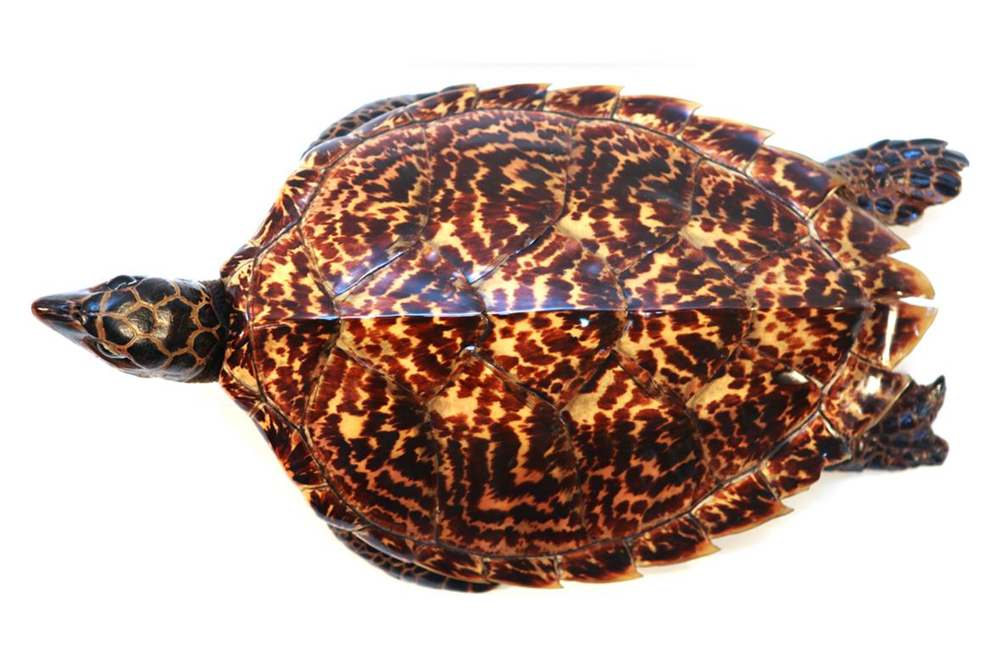

소개
매부리바다거북은 바다거북과의 거북이다. 매부리바다거북속의 1속 1종이며 심각한 명종위기에 놓여있다.
전 세계 대양에 분포하며, 대서양아종과 태평양아종이 있다.
외관
다른 바다거북과 비슷한 외관을 취하고 있다. 여느 바다거북과의 종들처럼 몸이 납작하며 앞발은 헤엄치기에 알맞게 되어있다. 최대 몸길이는 1m이며, 평균 몸무게는 80kg정도이다.
매부리바다거북의 등딱지는 호박색에 불규칙적인 줄무늬의 조합으로 이루어져 있으며 옆에는 주로 검은색,밤색으로 빛나고 있다.
매부리바다거북의 머리 끝에 있는 입에는 단단하고 뾰족한 부리가 있다. 앞발에는 각각 2개의 갈퀴가 있다. 매부리 바다거북의 두드러지는 특징은 인갑의 무늬다.
다른 바다거북처럼 갑각의 중앙에 5개, 뒷부분에 4쌍의 인갑이 있지만 이 인갑들이 독특한 방식으로 겹쳐 톱니 비슷한 무늬를 만들어낸다.
특징
매부리바다거북은 대개 열대지방의 산호초에서 발견되며, 낮에 산호초의 굴이나 암초사이에서 휴식을 하는 것이 목격된다. 왕성한 이주특성을 나타내기에 대양, 석호, 심지어 맹그로브와 같이 다양한 장소에서 서식한다. 대개의 매부리바다거북은 잡식성으로 알려져 있지만 주식은 해면동물인 것으로 알려져있다. 독성이 강한 해파리도 먹는데, 매부리바다거북은 이러한 독성이 강한 먹이에 대한 저항이 높다. 먹이의 독성물질이 축적되어 거북의 살 또한 독성을 띠는 경우가 있다.
